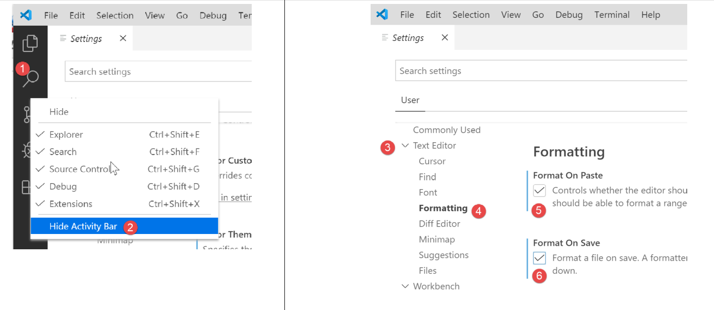
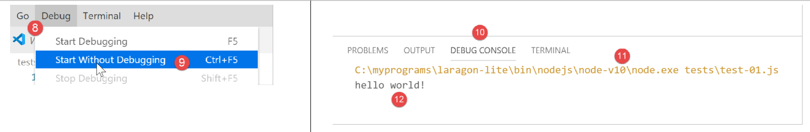
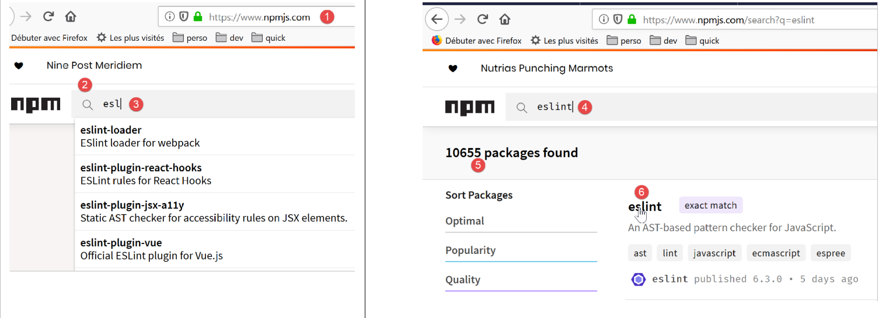
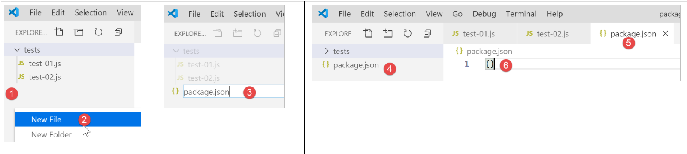
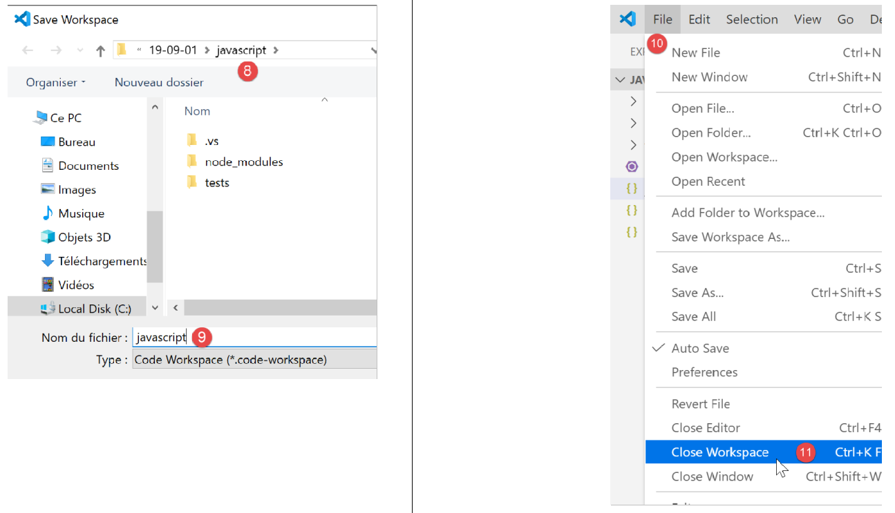

2. Setting up a development environment
We will use the following tools (on Windows 10 x64):
- [Laragon] to run the PHP web server;
- [Netbeans] to modify the code PHP;
- [Visual Studio Code] to write the code Javascript;
- [node.js] to run them;
- [npm] to download and install the Javascript libraries we will need;
2.1. Web server environment
The PHP scripts were written and tested in the following environment:
- an Apache web server environment / SGBD MySQL / PHP 7.3 called Laragon;
- IDE development environment Netbeans 10.0;
2.1.1. Installing Laragon
Laragon is a package that combines several software components:
- an Apache web server. We will use it to write web scripts in PHP;
- SGBD and MySQL;
- the PHP scripting language;
- a Redis server implementing a cache for web applications:
Laragon can be downloaded (March 2019) at the following address:


- The [1-5] installation creates the following directory structure:

- in [6], the installation folder for PHP;
Launching [Laragon] displays the following window:

- [1]: the Laragon main menu;
- [2]: the [Start All] button launches the Apache web server and SGBD MySQL;
- [3]: the [WEB] button displays the [http://localhost] web page, which corresponds to the PHP [<laragon>/www/index.php] file, where <laragon> is the Laragon installation folder;
- [4]: The [Database] button allows you to manage SGBD and MySQL using the [phpMyAdmin] tool. You must install this tool first;
- [5]: The [Terminal] button opens a command prompt;
- [6]: The [Root] button opens a Windows Explorer window positioned on the [<laragon>/www] folder, which is the root of the [http://localhost] website. This is where you should place all web applications managed by Laragon’s Apache server;
Let’s open a Laragon terminal [5]:

- in [1], the terminal type. Three types of terminals are available in [6];
- in [2, 3]: the current folder;
- In [4], type the command [echo %PATH%], which displays the list of folders searched when looking for an executable. All of Laragon’s main folders are included in this executable path, which would not be the case if you opened a [cmd] command window in Windows. In this document, when you are required to type commands to install a particular piece of software, these commands are generally typed in a Laragon terminal;
2.1.2. Installing IDE Netbeans 10.0
IDE Netbeans 10.0 can be downloaded from the following address (March 2019):
https://netbeans.apache.org/download/index.HTML

The downloaded file is a ZIP file that simply needs to be unzipped. Once Netbeans is installed and launched, you can create your first PHP project.

- In [1], select File / New Project;
- In [2], select the [PHP] category;
- In [3], select the project type [PHP Application];

- In [4], name the project;
- in [5], choose a folder for the project;
- in [6], select the version file downloaded from PHP;
- In [7], select UTF-8 encoding for the PHP files;
- In [8], select [Script] mode to run PHP scripts in command-line mode. Select [Local WEB Server] to run a PHP script in a web environment;
- In [9,10], specify the installation directory for the PHP interpreter from the Laragon package:

- select [Finish] to complete the PHP project creation wizard;

- In [11], the project is created with a script [index.php];
- in [12], a minimal PHP script is written;
- in [13], we run [index.php];

- In [14], the results from Netbeans are displayed in the [output] window;
- In [15], a new script is created;
- in [16], the new script;
The reader can create all the scripts that follow in different folders within the same PHP project. The source code for the scripts in this document is available in the following Netbeans directory structure:

The scripts in this document are located in the [scripts-console] [1] project directory structure. We will also use PHP libraries, which will be placed in the [<laragon-lite>/www/vendor] [2] folder, where <laragon-lite> is the installation folder for the Laragon software. In order for Netbeans to recognize the libraries from [2] as part of the [scripts-console] project, we need to include the [vendor] [2] folder in the [Include Path] [3] branch of the project. We will configure Netbeans so that the [<laragon-lite>/www/vendor] and [2] folders are included in any new PHP project, not just in the [scripts-console] project :

- In [1-2], go to the options for Netbeans;
- in [3-4], configure the options for PHP;
- in [5-7], configure [Global Include Path] from PHP: the folders specified in [7] are automatically included in [Include Path] for any PHP project;

- in [9], you can access the properties of the [Include Path] branch;
- in [10-11], the new libraries explored by Netbeans. Netbeans explores the code PHP in these libraries and stores their classes, interfaces, functions, etc., in order to provide assistance to the developer;

- In [12], a code snippet uses the [PhpMimeMailParser\Parser] class from the [vendor/php-mime-mail-parser] library;
- In [13], Netbeans suggests the methods of this class;
- in [14-15], Netbeans displays the documentation for the selected method;
The concept of [Include Path] is specific to Netbeans here. PHP also has this concept, but they are, in principle, two different concepts.
Now that the work environment has been set up, we can cover the basics of PHP.
2.2. Development Environment for JavaScript
These tools can be installed from Laragon (see link section):

In [4], we install [node.js]. Once the installation is complete, open a Laragon terminal (see link in the paragraph) and request the version from the installed [node.js] (1) as well as the one from [npm] (2):

Next, install Visual Studio Code, often referred to as [code], [VSCode], or [3-6]. Once this is done, you can launch this development tool:


2.2.1. Configuring Visual Studio Code
We will now show how we configured [VSCode] so that the reader can understand the screenshots that will appear from time to time. Readers are free to configure [VSCode] as they see fit. They can even set up their preferred development environment. This is irrelevant for what we’ll be doing next.
First, we change the appearance of the [VSCode] window to have a light background instead of a black one:

Then we hide the left sidebar [1-2], whose items are also available in the menu. In [3-6], we set the code to be formatted every time the file is saved and every time we copy and paste.

After saving the configuration [Ctrl-S], you can close the window [Settings] [7]. You can return to the [VSCode] [8-10] configuration at any time:

These configurations are saved in a file named [settings.json], which can be edited directly. Let’s open the [Settings] configuration window as previously shown:

In [4], you can directly edit the file [settings.json]:

- in [1], the path to the [settings.json] file. One way to revert to the default configuration is to delete this file;
- in [2], the configurations we just made;
Now, let’s open a terminal inside [VSCode] [1-2]:

- in [3], the type of terminal opened, here PowerShell;
- in [4], you can type Windows commands;
- in [6], you can open other terminals;
- in [5], the list of open terminals;
- in [7], closes the active terminal;
We will use the [VSCode] terminal to install Javascript packages (libraries) using the [npm] tool (Node Package Manager). Let’s check, as we did previously in a Laragon terminal, the version installed by [npm]:

We can see that the [npm] command was not recognized. This means that it does not belong to the PATH (list of folders to search for an executable, in this case [npm]) of the terminal. We can find out which PATH is used by the terminal:

The executable [npm] is not found in these folders. Like the other tools installed by Laragon, it is located in the Laragon [<laragon>\bin] folder, specifically in the [nodejs] [4-6] folder.

To launch [VSCode] and access [npm], we will launch [VSCode] from a Laragon terminal. When launched this way, [VSCode] will inherit from PATH in the Laragon terminal, which in turn contains the folder with the executables [node] and [npm]:

- in [1]: type the command [path];
- in [2]: the list of folders in PATH. We see the folder [node-v10] [2], which ensures that the executables [node] and [npm] will be found;
[VSCode] is launched from a Laragon terminal using the command [code]:

- In [2], a PowerShell terminal is opened within [VSCode];
- In [3-4], you can see that the executables [node] and [npm] are accessible;
Note: Do not close the Laragon terminal that launched the [VSCode] development environment, otherwise VSCode itself will close.
We will make one final configuration: we will change the default terminal for [VSCode]:


The [settings.json] file updates immediately:

Now, let’s open a new terminal [VSCode] [1]:

- to [2], a terminal named [cmd] (not PowerShell);
- in [3], the command [path] returns the PATH of the terminal;
- in [4], you can clearly see the folder containing the executables [node] and [npm]
2.2.2. Adding extensions to Visual Studio Code
Let’s create a file named Javascript using [VSCode]:


- In [3-4], create a folder;
- in [5], we set it as the current folder for [VSCode];
- In [6], open a terminal;
- In [7], you can see that you are in the selected folder. The following operations will take place in this folder;

- In [1-3]: create a new folder;
- in [4]: add a file to this folder;

- In [5-7]: we create our first program, Javascript;

- in [8-9]: we run the program Javascript;
- The result appears in the [10] execution console. In [11], we can see the command that was executed: the [node] application executed the [test-01.js] script. This was possible because this executable is located in PATH from [VSCode]; otherwise, an error would have occurred indicating that the command [node] was unknown;
Let’s proceed in the same way to run a second script, [test-02.js]:

- In [1-3], we define the new script. The [use strict] statement on line 1 requires strict syntax checking. In this context, every variable must be declared using one of the [let, const, var] keywords. This is not the case for the variable [x] on line 2;
- when this code is executed via [Ctrl-F5], the error [5] is returned. It is possible to be warned of this type of error before execution. This is preferable. We will do two things:
- install, using [npm], a library called [eslint] that verifies that the script’s syntax complies with the ECMAScript 6 standard;
- install a Visual Studio Code extension, also named ESLINT, which facilitates the use of the [eslint] library within [VSCode];
First, let’s install the Javascript [eslint] library using the [npm] tool. To install a [npm] library (also known as a package), you need to know its exact name. If you don’t know it, you can go to the [npm] website at URL (2019) [https://www.npmjs.com/]:

- in [3], the packages starting with [esl];
- in [4-6], the package [eslint] is found;

- in [7], the command [npm] to install the package [eslint];
- in [8], the package configuration;
- in [9], its use to check the syntax of a Javascript script;
We install the [eslint] package in a [Terminal] window of [VSCode]. First, we need to create a [package.json] file at the root of the [VSCode] working directory. This file will contain the list of jS packages used by the [VSCode] project:

- in [1], right-click in the project explorer (not on the tests folder);
- In [3-4], create the file [package.json] at the root of the [javascript] project, at the same level as the [tests] folder (but not in [tests]);
- In [4-6], we place an empty jSON object into the [package.json] file;
Then we open a [VSCode] terminal to install [eslint]:

- In [2], we are at the root of the [javascript] project;
- in [3], the command that installs the [eslint] package;
- after execution,
- in [4-5], the file [package.json] has been modified. Line 3 shows the installed version from [eslint]. Line 2: [devDependencies] corresponds to the [--save-dev] argument of the installation. This argument means that the installed dependency must be listed in the [package.json] file as an element of the [devDependencies] property. This property lists the project dependencies that are needed in development mode but not in production mode. In fact, the [eslint] dependency is only needed in development to verify that the written code complies with the ECMAScript standard;
- In [6], a folder named [node_modules] appeared in the project. This is the folder where the project’s dependencies are installed;

- In [7], some of the installed packages. There are a great many of them. In fact, not only was the [eslint] package installed, but also all the packages on which it relies;

- [1-2], in a [VSCode] terminal, we issue the configuration command for the [eslint] package. This will ask various questions to determine how you wish to use the package. If in doubt, leave the default options as they are. To select a option, use the up and down arrow keys on the keyboard to choose the option and then confirm it;
- In [4], a [.eslintrc.js] file has been created at the root of the project;
- In [6], the file contents. You can copy the contents into your own file;
module.exports = {
"env": {
"browser": true,
"es6": true
},
"extends": "eslint:recommended",
"globals": {
"Atomics": "readonly",
"SharedArrayBuffer": "readonly"
},
"parserOptions": {
"ecmaVersion": 2018,
"sourceType": "module"
},
"rules": {
}
};
This is not enough to report the errors in the [test-02.js] file:

- you must enter the command [2-3] for the file [tests/test-02.js] to be analyzed;
- in [4], the error regarding the undeclared variable is detected;
We are going to add an extension to [VSCode] that will allow us to view Javascript errors in real time. This extension is based on the [eslint] package that we installed:

- In [3-5], we install the extension called [ESLint];

- in [1], an information page about the newly installed extension;
- in [2], we see that the validation mode for [ESLint] is [type], which means that the syntax of the jS scripts will be validated as the text is typed;
ESLint can be configured via the general configuration file for [VSCode]:

- in [6-7], the configuration for [ESLint]. This is where you can modify it;
Now let’s return to the [test-02.js] file:

- in [3-4], errors in the [x] variable are now reported;
- in [5]: the number of ESLint errors in the file;
- in [6], indicates that there are erroneous files in the [tests] folder;
If the error is corrected, the warnings for ESLint disappear:

Now let’s install an extension called [Code Runner]:

- Once the [Code-Runner] [1-5] extension is installed, you can configure it with [6-7] (above);

- in [1-2], the configuration elements of [Code-Runner];
- in [3], we specify that the output terminal be cleared before each execution;
- in [4], locate the element [Executor Map], which lists the execution tools for different languages;
- In [5-6], the configuration is copied to the clipboard;
- In [7-8], modify the file [settings.json];

- In [2], add a comma after the last element of the file [settings.json] [1];
- In [3], paste what was previously copied from [5-6]: this is the list of commands used to execute the various languages supported by [VSCode];
- In [4], the command to execute the files in Javascript. This only works if [node] is in the PATH directory of [VSCode]. If this is not the case, you can enter the full path to the [5] executable;
Now let’s save the configuration (Ctrl-S). With the [Code Runner] extension, Javascript files can be run by right-clicking on the [6] code (above):

2.2.3. Some useful [VSCode] commands
- To format your code, right-click on it [1] ;
- To close open windows, right-click on their titles [2-3] ;

- To display a specific window, right-click on it [4-5];
- To save your project (Workspace) [6-9] ;
- to save a project [10-11] ;


- to open a project [11-16]:

- view installed extensions [19-20]:

We now have good tools for developing in Javascript. We will now introduce this language using short code snippets. Since this presentation follows a course on PHP, we will occasionally compare the two languages to highlight their differences.